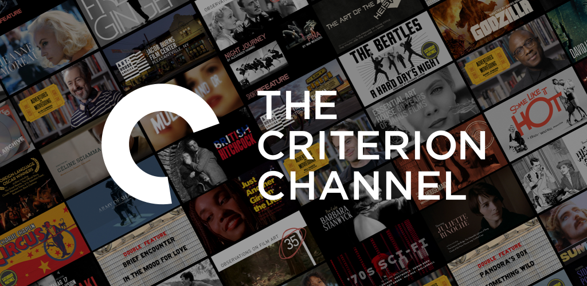

More offers of media digestion on my behalf.

Robert Sapolsky
I came across this professor's lecture on youtube recently, and he genius radiates in his speech and thought. He is a biologist and neuroscientist at Stanford and he especially triumphs when discussing free will and human behavior patterns. I enjoyed his lecture on language, specifically.
The Great Oklahoma Swindle
This book got recommended to me recently and it is adding so much conext and perspective to the anomaly state that is Oklahoma. Being from Tulsa himself, the writer discusses the rich and nuanced history of Oklahoma and Tulsa. There are so many different touch points from different cultures and misunderstandings that have been ingrained into the average Okie's collective memory. He paints such a perfect picture of the oddities of Oklahoma while tending to the overlooked aspects and acknowledging how the geography of the state has played such a paramount part to it's demise, and eventual flourishing.
Criterion Collection Subscription
The Criterion Channel allows paid subscription to access any of their films or rotating seasonal films they bring into fruition. You get access to countless international classics or comtemporary art pieces; everything and more. This subscription has proven to be of value with it's variety and dynamic rotation, at the low cost of eleven dollars per month.
You can get their app on browser, roku, mobile phone, etc. With the Criterion subscription, you can be pretentious at home, while you get your nails done, or waiting in line at the tag agency. A dream!